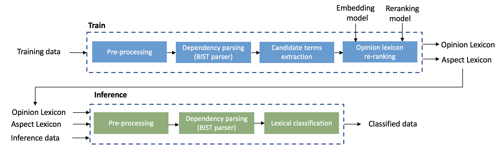

Aspect Based Sentiment Analysis (ABSA)
Overview
Aspect Based Sentiment Analysis is the task of co-extracting opinion terms and aspect terms (opinion targets) and the relations between them in a given corpus.
Algorithm Overview
Training: the training phase inputs training data and outputs an opinion lexicon and an aspect lexicon. the training flow consists the following three main steps:
1. The first training step is text pre-processing that is performed by Spacy. This step includes tokenization, part-of-speech tagging and sentence breaking.
2. The second training step is to apply a dependency parser to the training data. for this purpose we used the parser described in [1]. For more details regarding steps 1 & 2 see BIST dependency parser.
3. The third step is based on applying a bootstrap lexicon acquisition algorithm described in [2], the algorithm uses a generic lexicon introduced by [3] as initial step for the bootstrap process.
4. The last step includes applying an MLP based opinion term re-ranking and polarity estimation algorithm. This step is based on using the word embbedding similarities between each acquired term and a set of generic opinion terms as features. A pre-trained model is re-ranking provided.
Inference: the inference phase inputs an inference data along with the opinion lexicon and aspect lexicon generated by the training phase. The output of the inference phase is a list aspect-opinion pairs (along with their polarity and score) extracted from the inference data. The inference approach is based on detecting syntactically related aspect-opinion pairs.
Flow
Training
Full code example is available at examples/absa/train.py.
There are two training modes:
1. Providing training data in a raw text format. In this case the training flow will apply the dependency parser to the data:
python3 examples/absa/train/train.py --data=TRAINING_DATASET
Arguments:
--data=TRAINING_DATASET - path to the input training dataset. Should point to a single raw text file with documents
separated by newlines or a single csv file containing one doc per line or a directory containing one raw
text file per document.
Optional arguments:
--rerank-model=RERANK_MODEL - path to re-rank model. By default when running the training
for the first time this model will be downloaded to ~/nlp-architect/cache/absa/train/reranking_model
Notes:
- The generated opinion and aspect lexicons are written as csv files to:
~/nlp-architect/cache/absa/train/lexicons/generated_opinion_lex_reranked.csvand to~/nlp-architect/cache/absa/train/lexicons/generated_aspect_lex.csv - In this mode the parsed data (jsons of ParsedDocument objects) is written to:
~/nlp-architect/cache/absa/train/parsed - When running the training for the first time the system will download glove word embbedding model (the user will be prompted for authorization) to:
~/nlp-architect/cache/absa/train/word_emb_unzipped(this may take a while) - For demonstration purposes we provide a sample of tripadvisor.co.uk restaurants reviews under the Creative Commons Attribution-Share-Alike 3.0 License (Copyright 2018 Wikimedia Foundation). The dataset can be found at:
datasets/absa/datasets/absa/tripadvisor_co_uk-travel_restaurant_reviews_sample_2000_train.csv.
2. Providing parsed training data. In this case the training flow skips the parsing step:
python3 examples/absa/train/train.py --parsed-data=PARSED_TRAINING_DATASET
Arguments:
--parsed-data=PARSED_TRAINING_DATASET - path to the parsed format (jsons of ParsedDocument objects) of the training dataset.
Inference
Full code example is available at examples/absa/inference/inference.py.
There are two inference modes:
1. Providing inference data in a raw text format.
inference = SentimentInference(ASPECT_LEX, OPINION_LEX)
sentiment_doc = inference.run(doc="The food was wonderful and fresh. Staff were friendly.")
Arguments:
ASPECT_LEX - path to aspect lexicon (csv file) that was produced by the training phase.
aspect.csv may be manually edited for grouping alias aspect names (e.g. ‘drinks’ and ‘beverages’)
together. Simply copy all alias names to the same line in the csv file.
OPINION_LEX - path to opinion lexicon (csv file) that was produced by the training phase.
doc - input sentence.
2. Providing parsed inference data (ParsedDocument format). In this case the parsing step is skipped:
inference = SentimentInference(ASPECT_LEX, OPINION_LEX, parse=False)
doc_parsed = json.load(open('/path/to/parsed_doc.json'), object_hook=CoreNLPDoc.decoder)
sentiment_doc = inference.run(parsed_doc=doc_parsed)
Inference - interactive mode
The provided file examples/absa/inference/interactive.py enables using generated lexicons in interactive mode:
python3 interactive.py --aspects=ASPECT_LEX --opinions=OPINION_LEX
Arguments:
--aspects=ASPECT_LEX - path to aspect lexicon (csv file format)
--opinions=OPINION_LEX - path to opinion lexicon (csv file format)
References
| [1] | Simple and Accurate Dependency Parsing Using Bidirectional LSTM Feature Representations, Eliyahu Kiperwasser and Yoav Goldberg. 2016. Transactions of the Association of Computational Linguistics, 4:313–327. |
| [2] | Opinion Word Expansion and Target Extraction through Double Propagation, Guang Qiu, Bing Liu, Jiajun Bu, and Chun Chen. 2011. Computational Linguistics, 37(1): 9–27. |
| [3] | Mining and Summarizing Customer Reviews, Minqing Hu and Bing Liu. 2004. In Proceedings of the Tenth ACM SIGKDD International Conference on Knowledge Discovery and Data Mining, KDD ’04, pages 168–177. |